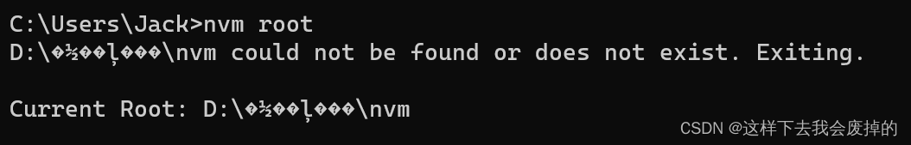

一步到位——Node版本管理神器nvm安装教程（2023最新）
Node.js版本管理神器——nvm安装/避坑/使用全教程（2023年最新）
前言🤡
Node的安装是许多学习前端的小伙伴的必经之路，我们可能会遇到需要切换node版本的情况，卸载node再安装另一个显然不够优雅，因此nvm的出现极大提高我们切换node的效率。
然而，在nvm的安装过程中有很多坑，许多新手非常容易踩雷，那么接下来让我带领你们，一次到位安装nvm，包能用，包提醒哪里有坑😀，只要你按我说的一步一步做即可，记得点赞收藏一波哈👏👏👏！
为保证一次包过，所有cmd操作请用❗管理员身份❗运行
题外话—ChatGPT的回答
ChatGPT最近很火爆，快来看看它怎么回答😎
咳咳🤧，好的我们开始正片！
一、下载nvm
1. 发行版本地址👈
https://github.com/coreybutler/nvm-windows/releases
在这里可以查看到所有发行版本
2. 如何选择版本，为什么❓
现在是2023年，已经更新到1.1.10版本了，那么我们该选择哪个版本呢？这里我的建议是初学者使用稳定版1.1.7版本，因为在1.1.8和1.1.9版本的安装和使用过程中，相对来说更容易遇到报错的情况，而1.1.7版本更加稳定和久经考验，因此本文选择1.1.7版本
3. 值得点赞😍的贴心下载链接
我们选择zip版本的压缩包下载即可，在压缩包里面是一个exe文件，在这里我也把链接放上，方便小伙伴一步到位下载👈
https://github.com/coreybutler/nvm-windows/releases/download/1.1.7/nvm-setup.zip
二、删除已有的Node.js
1. 为什么要卸载呢❓
这是因为如果不卸载的话，有可能安装不成功，如下图2所示，在安装1.1.7的版本过程中，如果不事先卸载已安装的版本的话，则nvm安装程序也会提示在安装nvm之前必须先卸载已安装的Node.js，所以呢，如果我们所以呢我们就不要心疼了，直接大大方方卸载就行~
那么在哪里卸载呢？
2. 在控制面板卸载Node.js🛠️
按下Win键，直接键盘输入控制面板的拼音即可，或者Win + R打开运行输入control回车也行
然后点击卸载程序
然后我们找到Node.js
双击，然后选是，卸载即可
好的，这一步我们就卸载完了，打开cmd，输入node，这时候也提示
‘node’ 不是内部或外部命令，也不是可运行的程序或批处理文件。
说明我们已经卸载完毕
三、安装nvm
1. 同意用户协议👏
双击exe文件，选择I accept the agreement，然后next
接下来是选择安装目录，这一步我们一般默认即可
2. 选择nvm安装目录
但是要注意了❗如果要修改的话，安装路径中，文件夹不能含有中文，推荐选择一个没有中文或者空格的安装目录，这一点特别注意，路径必须全英文，不含有任何中文字符，这一点在初学者中很容易犯错，比如D:\软件\nvm、C:\Users\坤坤\nvm ，都是不推荐的，后续使用过程中一般会报错
报错示例
nvm安装目录包含中文的话，执行后续指令的时候，会报这个错

如果实在不小心安装在中文目录的话，则卸载重来即可
3. 选择nodejs的安装目录
下一步是选择nodejs的安装目录，这里直接默认即可，如果要改的话，路径最好也是全英文的
报错示例
Node.js安装目录包含中文的话，执行后续指令的时候，会报这个错
4. Install
然后直接install即可
5. 安装完成
点击Finish完成安装

四、配置nvm镜像
1. 寻找安装目录
我们打开cmd，输入 nvm ，可以看到打印出了nvm的指令列表，说明nvm安装成功
我们输入 nvm root 查看nvm的安装目录
默认情况在这个位置，如果你是旧版cmd的话，直接选择这段路径，回车即可复制，或者Ctrl + Insert(Ins)
C:\Users\你的用户名\AppData\Roaming\nvm
然后我们按下Win键直接Ctrl + V粘贴即可
2. 修改配置
打开安装目录后，直接编辑settings.txt即可
加入以下配置，Ctrl + S保存即可
node_mirror: https://npm.taobao.org/mirrors/node/
npm_mirror: https://npm.taobao.org/mirrors/npm/
五、使用nvm
注意❗，我们先关闭cmd，然后重新打开一个
1. 查看可用版本
输入以下格式的指令
nvm list available
可以查看到最近的版本和LTS长期支持版，如果要查看全部版本则可以到以下网址查看所有发行版本
https://nodejs.org/download/release
2. 安装Node.js
输入以下格式的指令
nvm install 版本号
例如 nvm install 16.12.0
一般来说，在配置了淘宝镜像之后，下载速度很快，如果下载很慢的话，有可能是没有配置镜像或者网络波动
3. 使用对应的版本
nvm use 版本号
例如 nvm use 16.12.0
现在就切换到了Node.js 16.12.0版本
4. 查看npm版本
npm -v
5. npm升级降级安装
npm install npm@版本号
例如 npm i npm@6
6. 多版本管理
查看下载的Node.js版本列表
nvm ls
Currently using 64-bit executable 表示当前使用的版本
卸载某个版本
nvm uninstall 版本号
7. 附录：所有指令
nvm-arch #显示节点是以32位还是64位模式运行。nvm install＜version＞[arch]
#版本可以是node.js版本，也可以是“最新”的最新稳定版本。
#（可选）指定是安装32位版本还是64位版本（默认为system arch）。
#将[arch]设置为“all”以安装32 AND 64位版本。
#在该命令的末尾添加--unsecurity，以绕过远程下载服务器的SSL验证。nvm list[可用] # 列出node.js的安装。在末尾键入“available”（可用），查看可以安装的内容。别名为ls。nvm on #启用node.js版本管理。nvm off #禁用node.js版本管理。nvm proxy [url]
#设置用于下载的代理。将[url]留空以查看当前代理。
#将[url]设置为“none”以删除代理。nvm node_mirror [url] #设置节点镜像。默认为https://nodejs.org/dist/.将[url]留空以使用默认url。nvm npm_mirror [url] #设置npm镜像。默认为https://github.com/npm/cli/archive/.将[url]留空为默认url。nvm uninstall ＜version＞ #版本必须是特定的版本。nvm use [version] [arch]
#切换到使用指定的版本。可选择指定32/64位体系结构。
#nvm使用＜arch＞将继续使用所选版本，但切换到32/64位模式。
#nvm-root[path]：设置nvm应存储不同版本node.js的目录。
#如果未设置＜path＞，则会显示当前根目录。nvm version #显示用于Windows的nvm的当前运行版本。别名为v。
本文来自互联网用户投稿，该文观点仅代表作者本人，不代表本站立场。本站仅提供信息存储空间服务，不拥有所有权，不承担相关法律责任。如若转载，请注明出处：https://www.rstk.cn/news/73161.html 如若内容造成侵权/违法违规/事实不符，请联系我的编程生涯网邮箱：xxxxxxxxx@qq.com进行投诉反馈，一经查实，立即删除！